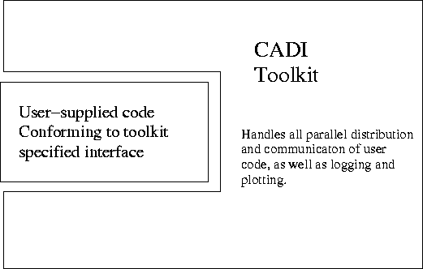

The CADI toolkit is designed to make certain computational tasks a lot easier. It was designed initially for internal only use, and so has a historical emphasis in the following areas:
While we primarily use the toolkit to run computations on a networked cluster computer, the toolkit also works just fine in stand-alone (single-machine) mode. It also runs on normal desktop machines over a LAN.
The toolkit is written almost entirley in Java, with only a small amount of C code. If you wonder if Java is too slow for numerical work, see the FAQ.
Common parallel programming tools such as MPI provide a rich framework for parallel computing, but they require you to do all the work yourself. The primitives are flexible enough to allow you to do anything, but at possibly great programming effort. The philosophy of the toolkit is to provide implementations of some common parallel tasks, and relieve the user of any parallel programming. Thus, the toolkit works as a 'black-box' -- you provide some of your code, and the toolkit will take care of distributing this code. Of course, in general, this is a hard thing to do, but for some tasks (like non-linear inversion) it is possible. 
Even if you only need to perform a computational task on a single machine, currently this is often done by writing your own version of some common routine, or obtaining either source code or library from another author and going through the laborious process of trying to get this compiled and/or linked with your own code. The toolkit has the advantage that it provides a single well documented interface, and performs the linking between the numerical routine you wish to use and your code automatically at run time. It also provides you with facilities to plot the results of some computations in real time (i.e. as the computation runs), and log results to file. You do not need to write any of this logging or plotting code, just like you dont need to write any parallel computing code if you want to run in parallel.
This section still to be written.....